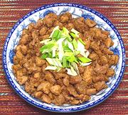

|
Tangerine Peel ChickenChina - Sichuan | ||||
| Serves: Effort: Sched: DoAhead: |
2 main *** 1-1/4 hrs Most |
This is a very popular, very flavorful chicken stir fry from southwest China. The recipe as given is pretty mild for Sichuan, but feel free to hot it up if you wish (see Note-6). | |||
|
1-1/2 ------- 1 3 1 1 ------ 4 1/2 ------ 1 1 1 1 1/4 ------ 2 1/2 1/2 ------ 1/2 1/4 |
# --- t T T --- pcs t --- t T T T c --- T T t --- t c |
Chicken meat (1) -- Marinade Ginger Root Scallion Soy Sauce Rice Wine (2) ---------- Tangerine Peel (3) Sichuan Pepper (4) -- Seasoning Sugar Rice Vinegar Rice Wine (2) Soy Sauce Stock (5) ---------- Oil Oil (more) Hot Bean Paste (6) -- Garnish Sesame Oil (7) Scallions |
Prep - (50 min (30 min work))
|